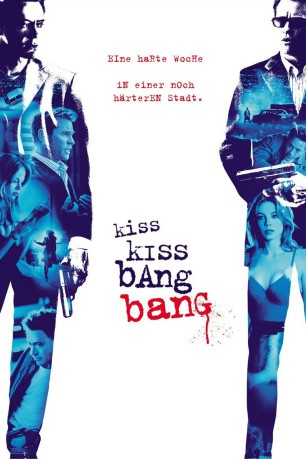
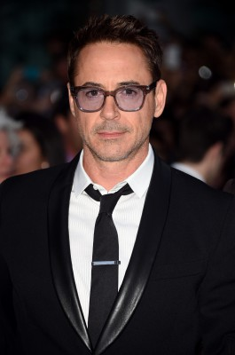
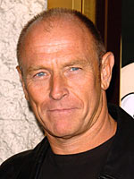
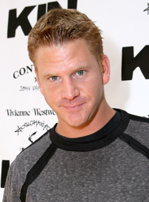
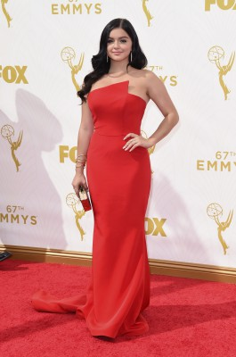
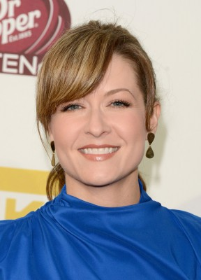
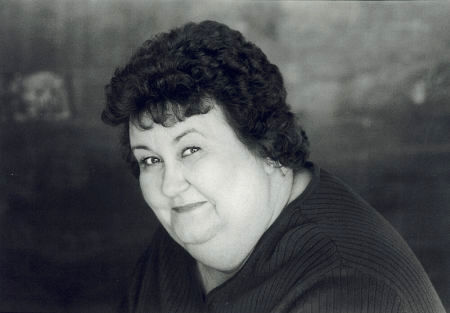
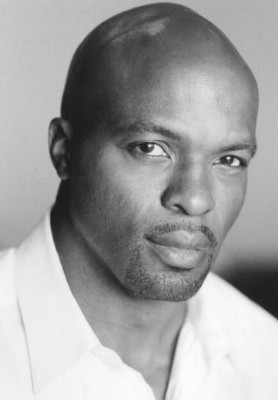
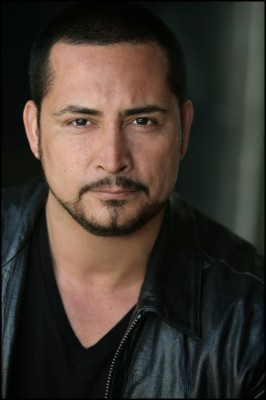
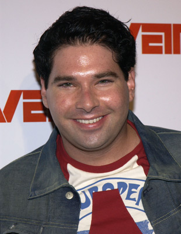

#1548 Kiss Kiss Bang Bang
 
 IMDB-Wertung: 7.6 / 10
IMDB-Wertung: 7.6 / 10  Metascore: 72
Metascore: 72 
Man sagt, "Geld und Liebe - das funktioniert nicht." Aber man kann es Harry Lockhart nicht übel nehmen, dass er es trotzdem versucht hat. Er wurde aus seinem Kleinganovendasein gerissen und nach Hollywood verfrachtet, um für die Rolle als Ermittler in einem Film vorzusprechen. Dafür erhält er zunächst Detektivstunden bei einem hartgesottenen Privatschnüffler, jetzt muss er nur noch seiner Traumfrau glaubhaft machen, dass er tatsächlich ein Detektiv ist und dabei versuchen, nicht über die vielen Leichen zu stolpern, die überall plötzlich auftauchen.
Jahr: 2005
Dauer: 103 Minuten
FSK: 12
Land: USA Studio: Warner Bros.Tonspuren: DD5.1 - ,
Untertitel: Deutsch,
Auflösung: 1080p (1920x816) Größe: 8140 MB
Genre: Komödie, Krimi, Mystery, Weihnachten
Regisseur: Shane Black
Drehbuch: Brett Halliday, Shane Black, Shane Black
Soundtrack: John Ottman
Darsteller:
-  Robert Downey Jr. als Harry Lockhart
 Val Kilmer als Gay Perry
Val Kilmer als Gay Perry Michelle Monaghan als Harmony Faith Lane
Michelle Monaghan als Harmony Faith Lane-  Corbin Bernsen als Harlan Dexter
-  Dash Mihok als Mr. Frying Pan
 Larry Miller als Dabney Shaw
Larry Miller als Dabney Shaw- Rockmond Dunbar als Mr. Fire
- Shannyn Sossamon als Pink Hair Girl
- Angela Lindvall als Flicka
- Indio Falconer Downey als Harry Lockhart - Age 9
-  Ariel Winter als Harmony Faith Lane - Age 7
- Martha Hackett als Pistol Woman
- Nancy Fish als N.Y. Casting Woman
- Bill McAdams Jr. als N.Y. Cop
- Jake McKinnon als Creature
- Christopher Gilman als Protocop
- David Newsom als Agent Type
 Judie Aronson als Gift Bag Girl
Judie Aronson als Gift Bag Girl-  Ali Hillis als Marleah
 Wiley M. Pickett als Homicide Cop
Wiley M. Pickett als Homicide Cop- Joe Keyes als Lobby Cop
- Jake Eberle als Patrol Cop
- Lela Edgar als Party Girl
- Teresa Herrera als Newswoman
-  Kathy Lamkin als Woman in Hospital Blues
-  Evan Parke als Dexter Clinic Guard
 Vincent Laresca als Aurelio
Vincent Laresca als Aurelio- Brian Simpson als Dexter Goon
 Cole S. McKay als Dexter Goon
Cole S. McKay als Dexter Goon-  Ben Hernandez Bray als Dexter Goon
-  Joel Michaely als Eugene , credit only
- Jessica Anderson als Upscale Women , uncredited
- Richard Alan Brown als Harry Lockhart - Age 16 , uncredited
- Mary Castro als Model at Party , uncredited
- Deanna Dozier als Kristin , uncredited
 Sebastian Feldman als Pool Party Guest , uncredited
Sebastian Feldman als Pool Party Guest , uncredited Laurence Fishburne als Bear in Genaros Beer Commercial , uncredited
Laurence Fishburne als Bear in Genaros Beer Commercial , uncredited- Richard Grieco als B-Movie Actor , uncredited
- Jaelin Palmer als Pie Eating Contest Kid , uncredited
- Jasen Salvatore als Actor at Audition , uncredited
- Tom Willett als Abe Lincoln , uncredited
- Rachel Zeskind als Woman in Pool , uncredited
- Duane Carnahan als Chainsaw Kid
- Josh Richman als Richie
- Tanja Reichert als B-Movie Actress
- Stephanie Pearson als Harmony Faith Lane - Age 14
- Brendan Fehily als Local News Reporter
- Daniel Bobby Tuttle als Hotel Concierge
- Saida Pagan als News Anchor
- Daniel Browning Smith als Rubber Boy
Datei: X:\2005(G-M)\Kiss Kiss Bang Bang (2005, FSK12, 1920x816).mkv seit 15.07.2015
Festplatte: HD 2005(G-Z)-2006(A-Z)
 Es gibt insgesamt 46 Filme in der Gruppe '2005(G-M)'
Es gibt insgesamt 46 Filme in der Gruppe '2005(G-M)'